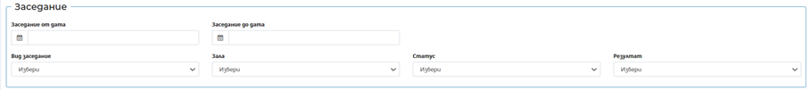
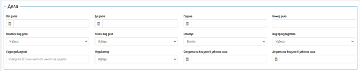
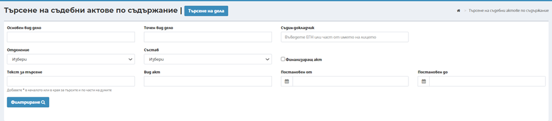
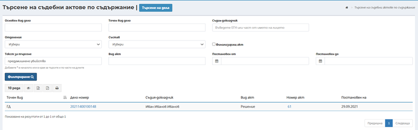

- Инструмент Разширено търсене.
Разширено търсене предоставя възможност да се търси по конкретни критерии в два различни режима:
Разширено търсене или търсене на дела, в резултат на което се връщат всички дела отговарящи на зададените критерии.
I. Режим Разширено търсене предоставя в възможност за търсене на дела под различни критерии. Екранът е организиран в няколко секции:
· Секция Дела
Има реализирана възможност за търсене на дела под различни критерии.
· Секция Заседание

· Секция Актове
· Секция Свързани дела
· Секция Входящи/изходящи документи
· Страни по дело
· Съдебен състав
 |
При първоначално влизане в разширеното търсене, списъчния екран е в режим на търсене на дела, за да се премине към режим търсене на актове се натискане на бутон .
Търсене на съдебни актове по съдържание или търсене на актове, в резултат на което се връщат всички актове, отговарящи на зададените критерии.

Секция Разширено търсене на актове дава възможност за извършване на търсене, посредством допълнителни критерии, като:
- Основен вид дело
- Точен вид дело
- Отделение
- Състав
- Вид акт
- Постановен от –Постановен до
- Съдия-докладчик
- Чек бокс “Финализиращ акт“
- Текст за търсене
- Забележка: В поле „Текст за търсене“ при въведена дума се извършва търсене в обезличения акт по точно съвпадение на търсената дума. При изписване на символ * и част дума и отново символ *, в обезличения акт се търси къде в текста се съдържа тази част от думата, без значение от представките и наставките. Т.е. символът * замества неограничен брой символи преди и/или след думата.
Пример: При въвеждане на критерии „убийство“, като резултат системата ще изведе актове, където навсякъде се съдържа 100% съвпадение с думата „убийство“
При въвеждане на критерии „убийств*“, като резултат системата ще изведе актове, където се срещат думи като „убийство“, „убийства“, „убийството“, „убийствата“ и др. производни.
След натискане на бутон Филтриране резултатите се извеждат в долната половина на екрана в табличен вид, по отношение на делото в което се намира акта отговарящ на критериите за търсене. През хиперлинка на номера на акта, може да се прегледа съдържанието на обезличения акт:
